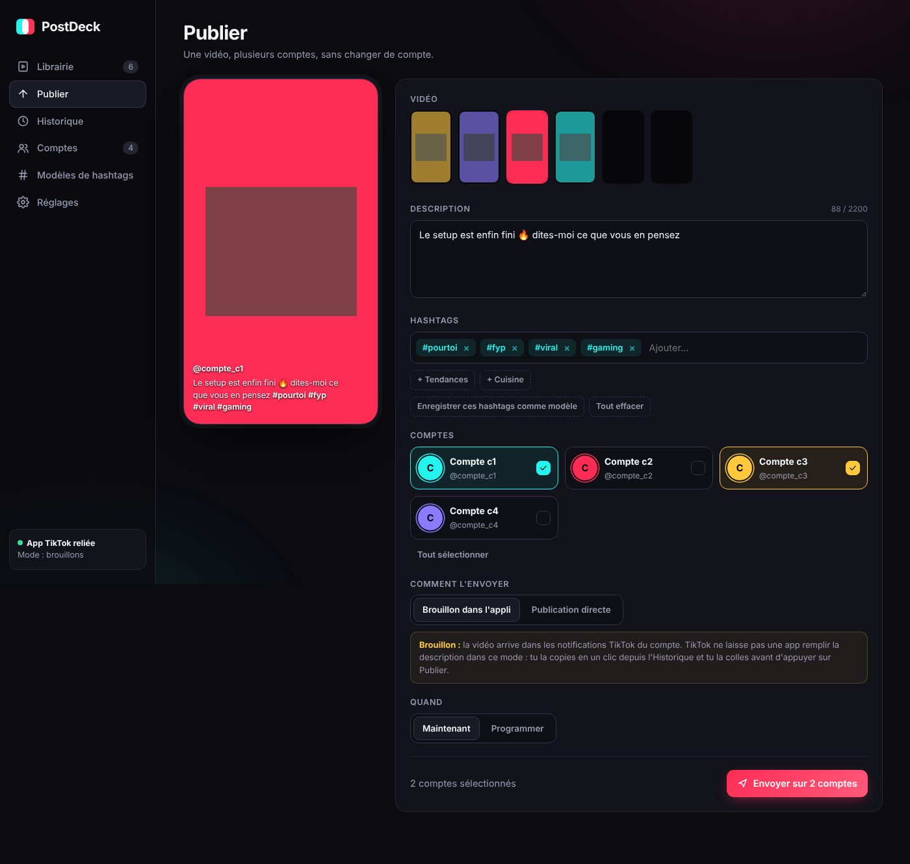
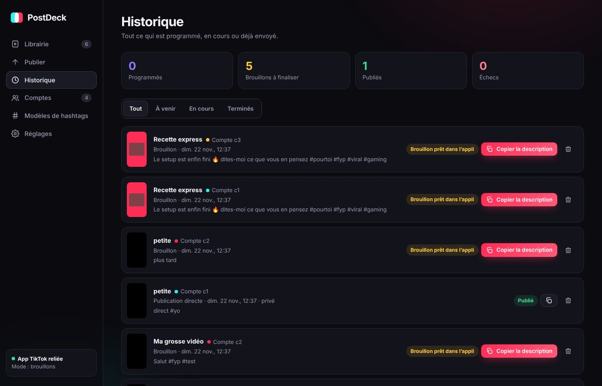

PostDeck is a desktop app for creators who manage several TikTok accounts. Upload, caption and schedule your own videos from one place, without switching accounts.

Sign in to each of your TikTok accounts through TikTok's official login. You stay in control and can disconnect at any time.
Drop your original videos into PostDeck. They stay on your computer.
Write the description, add hashtags or reuse a saved hashtag set.
Pick the accounts, then send now or at a set time, as a draft in the TikTok app or as a direct post.
